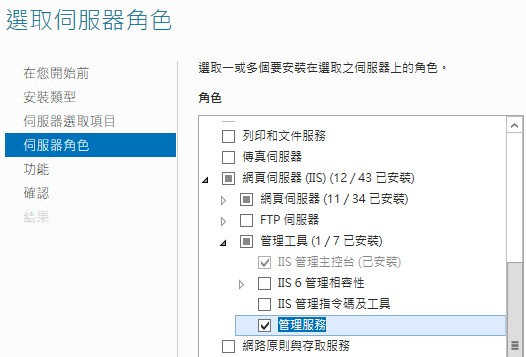

使用 visual studio 部屬 net 專案時候, 以往作法可能使用 [File System] 的方式: 先 publish 到 本地端 , 把檔案複製到遠端伺服器的站台目錄中…
如果程式調整頻繁,每一次更版動作就需要經過 publish => 複製 => 遠端進主機 => 貼到\取代 站台檔案 ; 這一串動作，可能會花費不少時間在部屬上。
下面介紹如何使用 [Web Deploy] , 應可以比上述的方式省去不少時間,在替換檔案前,也可以先瀏覽要替代檔案的差異,避免上錯版…問題
1. IIS伺服器主機設置
(只有第一次才需要進行安裝的步驟)
確認 msdepsvc 與 wmsvc service 服務有安裝
Web Management Service (安裝完 管理服務就會有)
Web Deployment Agent Service (裝完Web Deploy 3.0就會有)
1.1. 安裝 管理服務
新增角色及功能精靈\勾選 網頁伺服器\管理工具\管理服務

1.2. 設定 管理服務
啟用遠端連線，識別認證可以勾選 IIS 管理員認證那一項次
1.3. Web Deploy 3.X
到官網下載 Web Deploy Tool
https://www.iis.net/downloads/microsoft/web-deploy
請選完整,直接下一步安裝到底(裝完後 IIS 會有一個 管理服務委派 模組)
1.4. 將 port 設定允許
msdepsvc 80
wmsvc 8172
1.5. 設一組可以遠端部屬的帳號(建議)
電腦管理\本機使用者和群組
新增一個帳戶 (這邊建立一個 deploy帳號 為例子)
PS. 若使用建立帳號 , 記得到遠端主機存放位置 設定存取權限
http://www.iis.net/learn/publish/troubleshooting-web-deploy/web-deploy-error-codes
2. 遠端發佈
2.1. 設定 Publish
回到 visual studio (下圖以vs2013為例), 新增 Publish 設定
Site Name: 輸入在遠端主機的站台位置
User name\Password: 輸入有權限能寫入遠端主機的帳號
最後按下 [Validate Connetion] 驗證連線是否成功
(如失敗,可以查看相關錯誤訊息,可以對照此 http://www.iis.net/learn/publish/troubleshooting-web-deploy/web-deploy-error-codes 查看資料排除)
2.2. 一鍵發佈
上述設定完成後,在左方會有 Preview
透過這個介面,可以檢視 伺服器主機下的檔案 跟 我們這次新部屬的檔案 有哪邊不同,
甚至可以只勾選 想要丟上去的的檔案進行發佈
(建議不要直接衝動 按下publish 按鈕，比對一下會更新那些檔案比較保險！)
確認無誤後,就可以直接點下 publish 進行發佈。
之後每當我們程式需要發佈到主機上,進行下面的步驟就可以了
build -> 打開 publish -> preview 檔案異動 -> publish
以上。